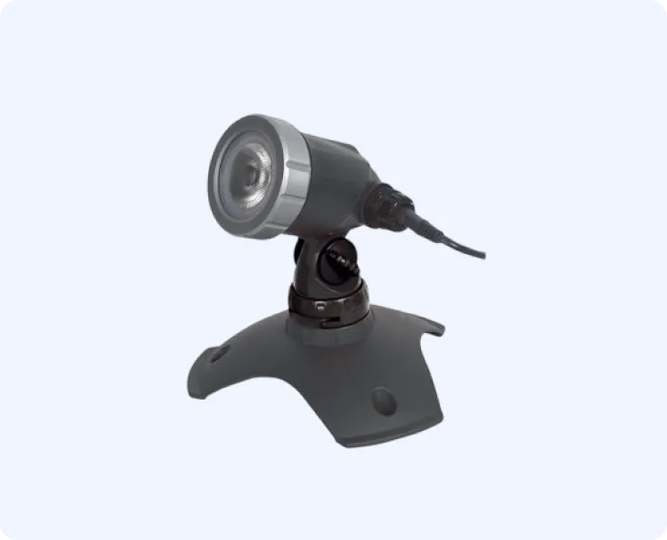

Подсветка для сада
Подсветка Aqualight 100 Power LED, 5 Вт, теплый белый
Цена и наличие
- 1 шт.629 BYN / шт.В наличии
Данные на 23.11.2026.
Характеристики
- Материал корпуса
- пластик
- Цвет
- теплый белый
- Класс защиты
- IP68 [глубина погружения до 4-х м], класс защиты трансформатора IP44
- Напряжение
- 12 В
- Длина кабеля
- 5 м
- Расстояние между светильниками
- у комплекта Aqualight 300 Power LED – 5 м
- В комплекте поставки
- трансформатор, колышек, крепеж для фонтанных насадок [ 2…4 см] • предусмотрена установка вне водоема
- Мощность
- 5 Вт
Описание
Aqualight 100 Power LED - подсветка для сада.
Подсветка Aqualight 100 Power LED, 1 светильник*5 Вт, каб 5м, теплый белый • пластиковый корпус • класс защиты IP68 [глубина погружения до 4-х м], класс защиты трансформатора IP44 • безопасное напряжение 12 В/переменный ток • укомплектован кабелем подводным, 2 x 0,33 мм², 5 м • расстояние между светильниками у комплекта Aqualight 300 Power LED – 5 м • в комплект поставки входит трансформатор, колышек, крепеж для фонтанных насадок [ 2…4 см] • предусмотрена установка вне водоема • температура окружающей среды -25…+40o С • температура корпуса при работе вне водоема 60o С • компактный корпус • простой монтаж • шаровое соединение для бесступенчатой горизонтальной и вертикальной регулировки положения • точечная подсветка фонтанов, водоемов, деревьев, кустарников и т.д.